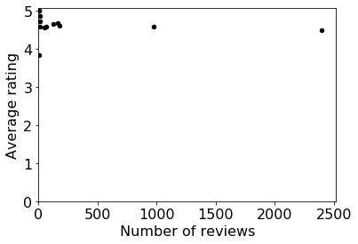
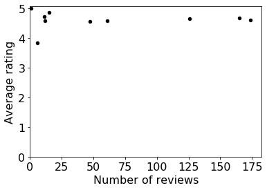
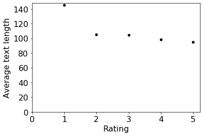
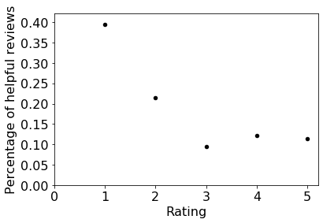
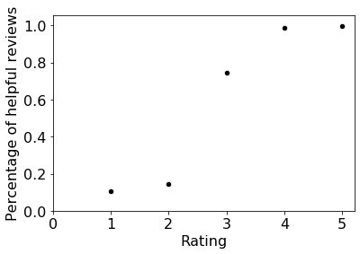

CS301_Proj9
Introduction
In this project, you’ll be analyzing a collection of reviews of Amazon products (adapted from https://www.kaggle.com/datafiniti/consumer-reviews-of-amazon-products/data). This data is messy! You’ll face the following challenges:
- data is spread across multiple files
- some files will be CSVs, others JSONs
- the files may be missing values or be too corrupt to parse
In stage 1, you’ll write code to cleanup the data, representing everything as Review objects (you’ll create a new type for these). In stage 2, you’ll analyze your clean data.
#project: p9
#submitter: naixinzhang
#partner: noneimport os, json, csv
from collections import namedtuple
from collections import defaultdict
import operator
import statistics
import pandas as pd
import numpy
%matplotlib inline#q1 What are the names of the files present in the data directory?
def get_names():
res =[]
for name in os.listdir('data'):
if not name.startswith('.'):
res.append(name)
return sorted(res, reverse = True)
get_names()['sample_reviews.json',
'sample_reviews.csv',
'review5.json',
'review5.csv',
'review4.json',
'review4.csv',
'review3.json',
'review3.csv',
'review2.json',
'review2.csv',
'review1.json',
'review1.csv',
'products.json']#q2 What are the paths of all the files in the data directory?
def get_path():
res =[]
for name in os.listdir("data"):
path = os.path.join("data", name)
res.append(path)
return sorted(res, reverse = True)
get_path()['data\\sample_reviews.json',
'data\\sample_reviews.csv',
'data\\review5.json',
'data\\review5.csv',
'data\\review4.json',
'data\\review4.csv',
'data\\review3.json',
'data\\review3.csv',
'data\\review2.json',
'data\\review2.csv',
'data\\review1.json',
'data\\review1.csv',
'data\\products.json']#q3 What are the paths of all the CSV files present in data directory?
def get_path_end():
res =[]
for name in os.listdir("data"):
if name.endswith('.csv'):
path = os.path.join("data", name)
res.append(path)
return sorted(res, reverse = True)
get_path_end()['data\\sample_reviews.csv',
'data\\review5.csv',
'data\\review4.csv',
'data\\review3.csv',
'data\\review2.csv',
'data\\review1.csv']#q4 What are the paths of all the files present in data directory, that begin with the phrase 'review'?
def get_path_re():
res =[]
for name in os.listdir("data"):
if name.startswith('review'):
path = os.path.join("data", name)
res.append(path)
return sorted(res, reverse = True)
get_path_re()['data\\review5.json',
'data\\review5.csv',
'data\\review4.json',
'data\\review4.csv',
'data\\review3.json',
'data\\review3.csv',
'data\\review2.json',
'data\\review2.csv',
'data\\review1.json',
'data\\review1.csv']def read_json(file):
f = open(os.path.join("data", file), encoding="utf-8")
json_str = f.read()
f.close()
return json.loads(json_str)#q5 What are the products in products.json?
read_json('products.json'){'B00QFQRELG': 'Amazon 9W PowerFast Official OEM USB Charger and Power Adapter for Fire Tablets and Kindle eReaders',
'B01BH83OOM': 'Amazon Tap Smart Assistant Alexa enabled (black) Brand New',
'B00ZV9PXP2': 'All-New Kindle E-reader - Black, 6" Glare-Free Touchscreen Display, Wi-Fi - Includes Special Offers',
'B0751RGYJV': 'Amazon Echo (2nd Generation) Smart Assistant Oak Finish Priority Shipping',
'B00IOY8XWQ': 'Kindle Voyage E-reader, 6 High-Resolution Display (300 ppi) with Adaptive Built-in Light, PagePress Sensors, Wi-Fi - Includes Special Offers',
'B0752151W6': 'All-new Echo (2nd Generation) with improved sound, powered by Dolby, and a new design Walnut Finish',
'B018Y226XO': 'Fire Kids Edition Tablet, 7 Display, Wi-Fi, 16 GB, Pink Kid-Proof Case',
'B01ACEKAJY': 'All-New Fire HD 8 Tablet, 8 HD Display, Wi-Fi, 32 GB - Includes Special Offers, Black',
'B01AHB9CYG': 'All-New Fire HD 8 Tablet, 8 HD Display, Wi-Fi, 32 GB - Includes Special Offers, Magenta',
'B01AHB9CN2': 'All-New Fire HD 8 Tablet, 8 HD Display, Wi-Fi, 16 GB - Includes Special Offers, Magenta',
'B00VINDBJK': 'Kindle Oasis E-reader with Leather Charging Cover - Merlot, 6 High-Resolution Display (300 ppi), Wi-Fi - Includes Special Offers',
'B01AHB9C1E': 'Fire HD 8 Tablet with Alexa, 8 HD Display, 32 GB, Tangerine - with Special Offers',
'B018Y229OU': 'Fire Tablet, 7 Display, Wi-Fi, 8 GB - Includes Special Offers, Magenta'}def read_csv(file):
res = []
f = open(os.path.join("data", file), encoding="utf-8")
reader = csv.DictReader(f)
return readerdef get_review(id,data):
reader = read_csv(data)
for row in reader:
if row['review id'] == id:
return row['review text']#q6 What is the review text of review with id 1410?
get_review('1410','review1.csv')'It does what it is suppose to. No problems with it...'#q7 What is the review text of review with id 69899?
def get_revi(id,col):
res = []
for name in os.listdir("data"):
if name.startswith('review') and name.endswith('.csv'):
res.append(name)
re = []
for data in res:
reader = read_csv(data)
for row in reader:
if row['review id'] == id:
return row[col]
get_revi('69899','review text')'I hate amazon app store. Nothing good in there. The tablet is too slow for what I do... it is good for reading only....'#q8 What is the review title of review id 28013?
get_revi('28013','review title')'Perfection'#q9 What file contained the review with that id?
def get_data(id,col):
res = []
for name in os.listdir("data"):
if name.startswith('review') and name.endswith('.csv'):
res.append(name)
re = []
for data in res:
reader = read_csv(data)
for row in reader:
if row['review id'] == id:
return data
get_data('28013','review title')'review3.csv'#q10 What is the data stored in sample_reviews.json?
read_json('sample_reviews.json'){'10101': ['Mikey123456789', 'B00QFQRELG'],
'99904': ['diamond', 'B00QFQRELG'],
'89604': ['Pat91', 'B00QFQRELG'],
'58704': ['Frank', 'B00QFQRELG'],
'38104': ['LADYD92', 'B00QFQRELG']}def get_reviews(csvfile,jsonfile):
c = read_csv(csvfile)
re = []
Review = namedtuple('Review', ['id', 'username', 'asin','title','text','rating','do_recommend','num_helpful','date'])
for row in c:
try:
if row['review id']!= None and row['review title']!=None and row['review text'] != None and row['review rating'] !=None and row['review do_recommend']!=None and row['review num_helpful'] != None and row['review date']!=None:
review = Review(id = int(row['review id']),username='',asin='',title=str(row['review title']),text=str(row['review text']),rating=int(row['review rating']),do_recommend=eval(row['review do_recommend']),num_helpful = int(row['review num_helpful']),date=str(row['review date']))
re.append(review)
else:
continue
except ValueError:
continue
j = read_json(jsonfile)
for i in j:
for num in range(len(re)):
if re[num].id == int(i):
try:
if j[i][0]!=None and j[i][1]!= None:
re[num] = re[num]._replace(username = str(j[i][0]),asin=str(j[i][1]))
else:
continue
except ValueError:
continue
return re#q11 What is produced by your function get_reviews('sample_reviews.csv', 'sample_reviews.json')?
get_reviews('sample_reviews.csv', 'sample_reviews.json') [Review(id=10101, username='Mikey123456789', asin='B00QFQRELG', title='A charger', text='It seems to work just like any other usb plug in charger.', rating=5, do_recommend=True, num_helpful=0, date='2017-01-02'),
Review(id=99904, username='diamond', asin='B00QFQRELG', title='amazon power fast usb charger', text='got this for my kindle 7 tablet . Does an excellent job charging the kindle fire 7 a lot faster than the one it came with the kindle fire', rating=5, do_recommend=True, num_helpful=2, date='2016-06-03'),
Review(id=89604, username='Pat91', asin='B00QFQRELG', title='Amazon powerfast wall charger', text='Best kindle charger ever. Took 30 minutes to being my kindle back to life.', rating=5, do_recommend=True, num_helpful=0, date='2016-11-21'),
Review(id=58704, username='Frank', asin='B00QFQRELG', title='correct plug for kindle', text='Quickly charges kindle so son can use it. Worked great right out of the package', rating=5, do_recommend=True, num_helpful=0, date='2016-10-14'),
Review(id=38104, username='LADYD92', asin='B00QFQRELG', title='Fast Charger', text='Bought this charger for the Kindle voyage and its great.', rating=5, do_recommend=True, num_helpful=0, date='2016-09-30')]#q12 What are the first ten Review objects in the list produced by get_reviews('review1.csv', 'review1.json')?
def get_first_ten_rows():
res = []
data = get_reviews('review1.csv', 'review1.json')
for i in range(10):
res.append(data[i])
return res
get_first_ten_rows()[Review(id=10101, username='Mikey123456789', asin='B00QFQRELG', title='A charger', text='It seems to work just like any other usb plug in charger.', rating=5, do_recommend=True, num_helpful=0, date='2017-01-02'),
Review(id=99904, username='diamond', asin='B00QFQRELG', title='amazon power fast usb charger', text='got this for my kindle 7 tablet . Does an excellent job charging the kindle fire 7 a lot faster than the one it came with the kindle fire', rating=5, do_recommend=True, num_helpful=2, date='2016-06-03'),
Review(id=89604, username='Pat91', asin='B00QFQRELG', title='Amazon powerfast wall charger', text='Best kindle charger ever. Took 30 minutes to being my kindle back to life.', rating=5, do_recommend=True, num_helpful=0, date='2016-11-21'),
Review(id=58704, username='Frank', asin='B00QFQRELG', title='correct plug for kindle', text='Quickly charges kindle so son can use it. Worked great right out of the package', rating=5, do_recommend=True, num_helpful=0, date='2016-10-14'),
Review(id=38104, username='LADYD92', asin='B00QFQRELG', title='Fast Charger', text='Bought this charger for the Kindle voyage and its great.', rating=5, do_recommend=True, num_helpful=0, date='2016-09-30'),
Review(id=76407, username='RobT', asin='B00QFQRELG', title='Good charger', text='This wall charger works exactly as described for the Kindle Paperwhite.', rating=5, do_recommend=True, num_helpful=0, date='2016-07-22'),
Review(id=83810, username='Iodine', asin='B00QFQRELG', title='Great item', text='Have been using this item and it seems to be working quite well.', rating=5, do_recommend=True, num_helpful=0, date='2017-03-15'),
Review(id=32310, username='Akki', asin='B00QFQRELG', title='Nice one', text='Good one and working without any issues. Slim and portable', rating=5, do_recommend=True, num_helpful=0, date='2016-06-24'),
Review(id=22010, username='STRIPYGOOSE', asin='B00QFQRELG', title='not any faster', text='it does not charge any faster than regular charger.', rating=3, do_recommend=False, num_helpful=0, date='2016-08-18'),
Review(id=1410, username='Jk60', asin='B00QFQRELG', title='Satisfied', text='It does what it is suppose to. No problems with it...', rating=4, do_recommend=True, num_helpful=0, date='2016-12-07')]#q13 What are the last ten Review objects in the list produced by get_reviews('review2.csv', 'review2.json')?
get_reviews('review2.csv', 'review2.json')[-10:][Review(id=25136, username='Angrydagg', asin='B018Y229OU', title='Nice features for the price.', text='For the price this tables does everything I need. so far.', rating=4, do_recommend=True, num_helpful=0, date='2015-12-30'),
Review(id=84039, username='Appman2015', asin='B018Y229OU', title='Great for xmas', text='So far I have bought three of these of tablets and they love it', rating=4, do_recommend=True, num_helpful=1, date='2015-12-30'),
Review(id=22239, username='SuzieQ', asin='B018Y229OU', title='great for pre teens', text='i am glad i got them for my grand children they r enjoying them', rating=5, do_recommend=True, num_helpful=0, date='2015-12-31'),
Review(id=70842, username='Gracie', asin='B018Y229OU', title='Great kindle', text='Purchase was good. Very easy to set up and use. Clear screen. Easy to charge. Would like more storage.', rating=5, do_recommend=True, num_helpful=0, date='2015-12-31'),
Review(id=60542, username='Jeremyjeepster', asin='B018Y229OU', title='Good entry level tablet reader.', text='His is a very economical entry level tablet. Great for kids or for first time users.', rating=4, do_recommend=True, num_helpful=0, date='2015-12-31'),
Review(id=9042, username='kinglowe78', asin='B018Y229OU', title='Good Deal', text='Real good deal. Nice present for those who want a tablet', rating=4, do_recommend=True, num_helpful=1, date='2016-01-01'),
Review(id=98845, username='jamal', asin='B018Y229OU', title='good basic', text='Good gift for basic Internet use browsing emails .', rating=3, do_recommend=True, num_helpful=1, date='2016-01-01'),
Review(id=37045, username='CaOk', asin='B018Y229OU', title='decent budget tablet that does what it suppose to', text='Nothing fancy. A good budget tablet that does what It suppose to do', rating=4, do_recommend=True, num_helpful=0, date='2016-01-01'),
Review(id=26745, username='Tablet2', asin='B018Y229OU', title='Affordable tablet', text='Bought tablet for my five year old nephew. Is affordable and has good specs. Easy to use. Camera and video are good. My nephew has no problem using it', rating=4, do_recommend=True, num_helpful=0, date='2016-01-01'),
Review(id=3248, username='Tims54913', asin='B018Y229OU', title='Great tablet', text='If your connected to amazon the tablet is great to use.', rating=5, do_recommend=True, num_helpful=0, date='2016-01-02')]#q14 What is the Review object with review id 84713?
def get_object(id):
data = get_reviews(get_data(id,'review title'), get_data(id,'review title').split('.')[0]+'.json')
for i in data:
if i.id == int(id):
return i
get_object('84713')Review(id=84713, username='mmolly1', asin='B01AHB9CN2', title='Great product', text='This product is very user friendly and it is very lightweight', rating=5, do_recommend=True, num_helpful=0, date='2017-01-08')#q15 What is the Review object with review id 42931?
get_object('42931')Review(id=42931, username='tbistone', asin='B01BH83OOM', title='Amazing', text='I literally use this thing every single day. Love it.', rating=5, do_recommend=True, num_helpful=0, date='2016-12-20')#q16 List the first ten Review objects in the entire dataset, sorted by increasing order of their review ids.
def get_entire():
data = []
for i in range(5):
csv_file = 'review'+str(i+1)+'.csv'
json_file = 'review'+str(i+1)+'.json'
try:
data = data + get_reviews(csv_file,json_file)
except:
continue
return sorted(data)
entire = get_entire()
entire[:10][Review(id=74, username='Wayne', asin='B01AHB9CN2', title='Kindle upgrade', text='Gave this to my wife for Christmas. Upgraded from the original Kindle. She thoroughly enjoys it.', rating=5, do_recommend=True, num_helpful=0, date='2016-12-31'),
Review(id=82, username='KKLORRAINE', asin='B01AHB9CN2', title='Good', text='Great for reading and Netflix. Fits nice in purse. Good price.', rating=4, do_recommend=True, num_helpful=0, date='2017-04-07'),
Review(id=110, username='nell', asin='B00IOY8XWQ', title='I love it', text='Prefect for all reading conditions and environments. I take it everywhere.', rating=5, do_recommend=True, num_helpful=0, date='2016-07-09'),
Review(id=122, username='apple21man', asin='B01BH83OOM', title='A great assistant', text='It works well it takes time for it to know your vocabulary', rating=5, do_recommend=True, num_helpful=0, date='2017-01-23'),
Review(id=247, username='rockydon1', asin='B018Y229OU', title='great', text='The Kindle fire is a great product. Will do so many things. Would recommend to anyone.', rating=5, do_recommend=True, num_helpful=0, date='2015-12-29'),
Review(id=251, username='Cheechu821', asin='B018Y229OU', title='Great product for its price', text='I purchased the tablet as a screen for my drink and it worked just fine', rating=3, do_recommend=True, num_helpful=0, date='2016-02-19'),
Review(id=263, username='aram58', asin='B018Y229OU', title='love the tablet', text='I would recommend this tablet to anyone that is interested in one. It is just as good as a Samsung one and half the price.', rating=5, do_recommend=True, num_helpful=0, date='2016-07-08'),
Review(id=271, username='NMGPRO', asin='B018Y229OU', title='Good little tablet', text='I purchased this to have a smaller footprint tablet. Could use more popular apps but still great for keeping the library at the tip of the fingers and a camera to boot.', rating=5, do_recommend=True, num_helpful=0, date='2016-01-21'),
Review(id=275, username='MikeGA', asin='B018Y229OU', title='Great for Amazon', text='This product is a great entry level tablet. It is limited in both memory and function.', rating=5, do_recommend=True, num_helpful=0, date='2016-01-05'),
Review(id=327, username='ritter6281', asin='B018Y229OU', title='Awesome tablet.', text='This tablet is better than any other tablet of the same cost range. My son saved up to buy his own tablet and had similar priced tablets break or have software issues. This tablet has a nice quality screen and it is nice to be able to not be forced to do everything through Amazon despite it being an Amazon tablet. The option of a Best Buy replacement plan is handy when getting the tablet for kids.', rating=5, do_recommend=True, num_helpful=0, date='2016-04-09')]#q17 Output the number of review objects for the product, "Amazon Tap Smart Assistant Alexa enabled (black) Brand New".
def get_num(sentence):
product = read_json('products.json')
res = []
for i in entire:
if product[i.asin] == sentence:
res.append(i)
return len(res)
get_num('Amazon Tap Smart Assistant Alexa enabled (black) Brand New')165#q18 Output the number of review objects for the product, "All-New Fire HD 8 Tablet, 8 HD Display, Wi-Fi, 32 GB - Includes Special Offers, Black".
get_num('All-New Fire HD 8 Tablet, 8 HD Display, Wi-Fi, 32 GB - Includes Special Offers, Black')12#q19 Find the name of the product with most reviews.
def get_most_reviews():
product=read_json('products.json')
pro = []
for i in product:
pro.append(product[i])
max_num = 0
idx = -1
for i in range(len(pro)):
if get_num(pro[i]) > max_num:
max_num = get_num(pro[i])
idx = i
return pro[idx]
get_most_reviews()'Fire Tablet, 7 Display, Wi-Fi, 8 GB - Includes Special Offers, Magenta'def get_asin(sentence):
product=read_json('products.json')
for i in product:
if product[i] == sentence:
return i#q20 Find the most helpful review(s) of this product.
def get_help_review():
most_help = 0
asin = get_asin(get_most_reviews())
for i in entire:
if i.asin == asin and i.num_helpful > most_help:
most_help = i.num_helpful
for i in entire:
if i.asin == asin and i.num_helpful == most_help:
return i
get_help_review() Review(id=85969, username='Beninkc', asin='B018Y229OU', title='5 star device crippled by amazon', text='This device would be the best possible tablet for the money if it had Google Play. However Amazon chose to block access to it. This took their well made tablet with a beautiful screen and great performance from an amazing value to a waste of money. This is my last amazon branded product.If you use a lot of apps or want specific apps shop for another device.', rating=1, do_recommend=False, num_helpful=20, date='2016-02-14')#q21 How many unique usernames appear in the dataset?
def get_unique_username():
data = entire
name =[]
for i in range(len(data)):
if data[i].username not in name:
name.append(data[i].username)
else:
continue
return len(name)
get_unique_username()3798#q22 Who are the top 30 prolific users in this dataset?
def get_top():
name_reviews = {}
data = entire
reviews = defaultdict(list)
for i in range(len(data)):
reviews[data[i].username].append(data[i].text)
reviews = dict(reviews)
for i in reviews:
name_reviews[i] = len(reviews[i])
sorted_d = sorted(name_reviews.items(), key=operator.itemgetter(1),reverse = True)
test_dict = dict(sorted_d)
return dict(list(test_dict.items())[0: 30])
get_top(){'Dave': 5,
'Steve': 4,
'Mike': 4,
'1234': 4,
'Susan': 4,
'Angie': 4,
'Chris': 4,
'Missy': 4,
'Pete': 3,
'Anonymous': 3,
'Josh': 3,
'Charles': 3,
'Rick': 3,
'Dani': 3,
'mike': 3,
'Bill': 3,
'John': 3,
'Jojo': 3,
'Kindle': 3,
'Bubba': 3,
'kcladyz': 3,
'Frank': 3,
'Grandma': 3,
'Mimi': 3,
'Richard': 3,
'Manny': 3,
'Susie': 3,
'Charlie': 3,
'Michael': 3,
'David': 3}#q23 Who are the users whose comments have been found helpful at least five times?
def get_help():
data = entire
name_help = {}
res = {}
for i in range(len(data)):
if data[i].username in name_help:
name_help[data[i].username] += data[i].num_helpful
else:
name_help[data[i].username] = data[i].num_helpful
for key,value in name_help.items():
if value >= 5:
res[key]=value
return res
get_help() {'Ellen': 10,
'Earthdog': 27,
'fenton': 6,
'Dick': 5,
'Junior': 7,
'AshT': 5,
'Stuartc': 8,
'safissad': 8,
'iMax': 5,
'trouble': 5,
'Roberto002007': 7,
'EricO': 7,
'stephfasc22': 5,
'LadyEsco702': 8,
'Karch': 5,
'TerrieT': 5,
'mysixpack': 6,
'Mark': 5,
'Rodge': 6,
'Deejay': 8,
'FrankW': 5,
'Beninkc': 20,
'CarlosEA': 10,
'1Briansapp': 5,
'Quasimodo': 5,
'Kime': 5}#q24 Find the average rating of each product.
def rating():
data = entire
temp = defaultdict(list)
for i in range(len(data)):
temp[data[i].asin].append(data[i].rating)
temp = dict(temp)
temp_a = {}
for i in temp:
temp_a[i] = float(statistics.mean(temp[i]))
res ={}
product =read_json('products.json')
for i in product:
for j in temp_a:
if i == j:
res[product[i]] = temp_a[j]
return res
rating(){'Amazon 9W PowerFast Official OEM USB Charger and Power Adapter for Fire Tablets and Kindle eReaders': 4.7272727272727275,
'Amazon Tap Smart Assistant Alexa enabled (black) Brand New': 4.6909090909090905,
'All-New Kindle E-reader - Black, 6" Glare-Free Touchscreen Display, Wi-Fi - Includes Special Offers': 4.590163934426229,
'Amazon Echo (2nd Generation) Smart Assistant Oak Finish Priority Shipping': 5.0,
'Kindle Voyage E-reader, 6 High-Resolution Display (300 ppi) with Adaptive Built-in Light, PagePress Sensors, Wi-Fi - Includes Special Offers': 4.666666666666667,
'All-new Echo (2nd Generation) with improved sound, powered by Dolby, and a new design Walnut Finish': 5.0,
'Fire Kids Edition Tablet, 7 Display, Wi-Fi, 16 GB, Pink Kid-Proof Case': 4.603448275862069,
'All-New Fire HD 8 Tablet, 8 HD Display, Wi-Fi, 32 GB - Includes Special Offers, Black': 4.583333333333333,
'All-New Fire HD 8 Tablet, 8 HD Display, Wi-Fi, 32 GB - Includes Special Offers, Magenta': 4.574468085106383,
'All-New Fire HD 8 Tablet, 8 HD Display, Wi-Fi, 16 GB - Includes Special Offers, Magenta': 4.6,
'Kindle Oasis E-reader with Leather Charging Cover - Merlot, 6 High-Resolution Display (300 ppi), Wi-Fi - Includes Special Offers': 4.866666666666666,
'Fire HD 8 Tablet with Alexa, 8 HD Display, 32 GB, Tangerine - with Special Offers': 3.8333333333333335,
'Fire Tablet, 7 Display, Wi-Fi, 8 GB - Includes Special Offers, Magenta': 4.490408673894913}def scatter(x, y, xlabel="please label me!", ylabel="please label me!"):
df = pd.DataFrame({"x":x, "y":y})
ax = df.plot.scatter(x="x", y="y", color="black", fontsize=16, xlim=0, ylim=0)
ax.set_xlabel(xlabel, fontsize=16)
ax.set_ylabel(ylabel, fontsize=16)
ax.get_xaxis().get_major_formatter().set_scientific(False)
ax.get_yaxis().get_major_formatter().set_scientific(False)#q25 What is the relationship between the number of reviews and the average rating of a product?
def get_rating():
data = entire
temp = defaultdict(list)
for i in range(len(data)):
temp[data[i].asin].append(data[i].rating)
temp = dict(temp)
temp_rating = {}
for i in temp:
temp_rating[i] = float(statistics.mean(temp[i]))
return temp_rating
def get_num_reviews():
data = entire
temp_num_reviews = {}
for i in range(len(data)):
if data[i].asin not in temp_num_reviews:
temp_num_reviews[data[i].asin] = 1
else:
temp_num_reviews[data[i].asin] += 1
return temp_num_reviews
x = []
y = []
temp_rating = get_rating()
temp_num_reviews = get_num_reviews()
for i in temp_rating:
x.append(temp_rating[i])
for j in temp_num_reviews:
y.append(temp_num_reviews[j])
scatter(y,x,xlabel="Number of reviews", ylabel="Average rating")
#q26 Remove the outliers from the last plot.
temp_rating = get_rating()
temp_num_reviews = get_num_reviews()
res = {}
for i in temp_rating:
for j in temp_num_reviews:
if i == j:
res[temp_rating[i]] = temp_num_reviews[j]
elements = numpy.array(y)
mean = numpy.mean(elements, axis=0)
sd = numpy.std(elements, axis=0)
final_list = [x for x in y if (x > mean - 2 * sd)]
final_list = [x for x in final_list if (x < 175)]
re = {}
for j in final_list:
for key,value in res.items():
if value == j:
re[key] = value
x_new = []
for i in re.keys():
x_new.append(i)
y_new = []
for j in re.values():
y_new.append(j)
scatter(y_new,x_new,xlabel="Number of reviews", ylabel="Average rating")
def bucketize():
res = {}
data = entire
for i in range(len(data)):
if data[i].rating in res:
res[data[i].rating].append(data[i])
else:
res.setdefault(data[i].rating,[]).append(data[i])
return res
#q27 What is the relationship between the rating and the average text length?
bucket=bucketize()
text_dict = {}
for obj in bucket:
for item in bucket[obj]:
if obj in text_dict:
text_dict[obj].append(len(item.text))
else:
text_dict.setdefault(obj,[]).append(len(item.text))
text_dict
res = {}
for rate in text_dict:
res[rate] = sum(text_dict[rate])/len(text_dict[rate])
res
x=[]
y=[]
for item in res:
x.append(item)
y.append(res[item])
scatter(x,y,xlabel="Rating", ylabel="Average text length")
#q28 What is the relationship between the rating and the likelihood of the review being helpful?
bucket=bucketize()
review = {}
for obj in bucket:
for item in bucket[obj]:
if obj in review:
review[obj].append(item.num_helpful)
else:
review.setdefault(obj,[]).append(item.num_helpful)
te = {}
for i in review:
te[i] = len(review[i])
temp = {}
for i in review:
for j in review[i]:
if j > 0:
if i in temp:
temp[i].append(j)
else:
temp.setdefault(i,[]).append(j)
t = {}
for i in temp:
t[i] = len(temp[i])
res = {}
for a in te:
for j in t:
if a == j:
res[a] = t[j]/te[j]
x=[]
y=[]
for item in res:
x.append(item)
y.append(res[item])
scatter(x,y,xlabel="Rating", ylabel="Percentage of helpful reviews")
#q29 What is the average rating of all reviews which recommend the corresponding products?
def get_avg_rating():
bucket=bucketize()
recommend = {}
for obj in bucket:
for item in bucket[obj]:
if item.do_recommend == True:
if obj in recommend:
recommend[obj].append(item.do_recommend)
else:
recommend.setdefault(obj,[]).append(item.do_recommend)
temp = {}
for i in recommend:
temp[i] = len(recommend[i])
denominator = 0
for key in temp:
denominator += temp[key]
numerator = 0
for key,value in temp.items():
numerator += key * value
return numerator/denominator
get_avg_rating()4.607549120992761#q30 What is the relationship between the rating and the likelihood of the product being recommended?
bucket=bucketize()
recommend = {}
for obj in bucket:
for item in bucket[obj]:
if item.do_recommend == True:
if obj in recommend:
recommend[obj].append(item.do_recommend)
else:
recommend.setdefault(obj,[]).append(item.do_recommend)
temp = {}
for i in recommend:
temp[i] = len(recommend[i])
all = {}
for obj in bucket:
for item in bucket[obj]:
if obj in all:
all[obj].append(item.do_recommend)
else:
all.setdefault(obj,[]).append(item.do_recommend)
tem = {}
for i in all:
tem[i] = len(all[i])
tem
res={}
for a in temp:
for j in tem:
if a == j:
res[a] = temp[j]/tem[j]
x=[]
y=[]
for item in res:
x.append(item)
y.append(res[item])
scatter(x,y,xlabel="Rating", ylabel="Percentage of helpful reviews")
#q31 Which words appear most commonly in the text of reviews with rating 5. List only the words that appear more than 1000 times.
def get_commonly_text(rate,num):
bucket = bucketize()
tex = []
for item in bucket[rate]:
tex.append(item.text)
res ={}
for item in tex:
for j in item.lower().split(" "):
if j in res:
res[j] += 1
else:
res[j] = 1
out = {}
for word in res:
if res[word]>num:
out[word] = res[word]
return out
get_commonly_text(5,1000){'this': 1016,
'to': 1442,
'my': 1146,
'for': 1800,
'the': 1740,
'and': 1818,
'i': 1317,
'it': 1286,
'a': 1134}#q32 Which words appear most commonly in the title of reviews with rating 5. List only the words that appear more than 100 times.
def get_commonly_title(rate,num):
bucket = bucketize()
tex = []
for item in bucket[rate]:
tex.append(item.title)
res ={}
for item in tex:
for j in item.lower().split(" "):
if j in res:
res[j] += 1
else:
res[j] = 1
out = {}
for word in res:
if res[word]>num:
out[word] = res[word]
return out
get_commonly_title(5,100){'kindle': 142,
'love': 158,
'it': 137,
'a': 143,
'great': 1093,
'the': 231,
'tablet': 681,
'good': 212,
'for': 617,
'awesome': 108,
'kids': 132,
'gift': 105,
'fire': 104,
'price': 149,
'product': 179,
'my': 138,
'to': 106}#q33 Which words appear most commonly in the title of reviews with rating 1. List only the words that appear more than once.
get_commonly_title(1,1){'poor': 2,
'tablet': 4,
'a': 5,
'great': 2,
'very': 3,
'disappointed': 2,
'use': 2,
'amazon': 5,
'not': 8,
'good': 2,
'5': 2,
'for': 2,
'with': 2,
'work': 2,
'really': 2,
'to': 2,
'and': 2,
'kindle': 2,
'does': 2}#q34 Which words appear most commonly in the title of reviews with rating 3 List only the words that appear more than 10 times.
get_commonly_title(3,10){'great': 37,
'for': 60,
'price': 18,
'ok': 18,
'tablet': 51,
'the': 18,
'good': 42,
'not': 13,
'a': 17}def get_path(path):
file_path_list = []
for root,dirs,files in os.walk(path):
if files:
for file in files:
file_path_list.append(os.path.join(root,file))
return sorted(file_path_list,reverse = True) #q35 List the paths in the helpful directory of rating5 of broken_file.
path = os.path.join('broken_file','rating5','helpful')
get_path(path)['broken_file\\rating5\\helpful\\helpful.json']#q36 List the paths of all the files in the rating4 directory of broken_file.
path = os.path.join('broken_file','rating4')
get_path(path)['broken_file\\rating4\\very_helpful\\very_helpful.json',
'broken_file\\rating4\\others\\short\\short.json',
'broken_file\\rating4\\others\\others\\others.json',
'broken_file\\rating4\\not_helpful.json']#q37 List the paths of all the files in the broken_file directory.
path = os.path.join('broken_file')
get_path(path)['broken_file\\rating5\\others.json',
'broken_file\\rating5\\helpful\\helpful.json',
'broken_file\\rating4\\very_helpful\\very_helpful.json',
'broken_file\\rating4\\others\\short\\short.json',
'broken_file\\rating4\\others\\others\\others.json',
'broken_file\\rating4\\not_helpful.json',
'broken_file\\rating3\\others\\others.json',
'broken_file\\rating3\\long\\long.json',
'broken_file\\others.json']#q38 Combine all the files in broken_file and find the number of unique products being reviewed in these files.
def read_broken_json(filepath):
f = open(filepath, encoding = "utf-8")
reader = json.load(f)
f.close()
return reader
def get_product():
all_path=get_path(path)
broken_files = []
for file in all_path:
broken_files.append(read_broken_json(file))
complete_list_broken_file = {}
for files in broken_files:
for file in files:
complete_list_broken_file[file] = files[file]
complete_list_broken_file
list_broken_csv = []
review4 = read_csv('review4.csv')
for row in review4:
list_broken_csv.append(dict(row))
list_broken_csv
list_broken_review_object = []
Review = namedtuple("Review",["id", "username","asin", "title", "text", "rating", "do_recommend", "num_helpful", "date"])
for i in range(len(list_broken_csv)):
boolean = False
if list_broken_csv[i]["review do_recommend"] == "True":
boolean = True
broken_review = Review(int(list_broken_csv[i]["review id"]),
complete_list_broken_file[list_broken_csv[i]["review id"]][0],
complete_list_broken_file[list_broken_csv[i]["review id"]][1],
list_broken_csv[i]["review title"],
list_broken_csv[i]["review text"],
int(list_broken_csv[i]["review rating"]),
boolean,
int(list_broken_csv[i]["review num_helpful"]),
list_broken_csv[i]["review date"])
list_broken_review_object.append(broken_review)
return list_broken_review_object
def get_num_product():
list_unique_products = []
list_broken_review_object = get_product()
for review in list_broken_review_object:
list_unique_products.append(review.asin)
return len(set(list_unique_products))
get_num_product()1#q39 Combine all the files in the directories data and broken_file, and find the total number of reviews.
def get_num():
stage1_data = entire
stage2_data= get_product()
return len(stage1_data) + len(stage2_data)
get_num()4992#q40 What is the percentage of change in the average rating changed for the product 'Fire Tablet, 7 Display, Wi-Fi, 8 GB - Includes Special Offers, Magenta', because of the addition of the new data?
def get_origin_avg():
products = read_json("products.json")
total_grades = 0
n = 0
entire = get_entire()
for review in entire:
if products[review.asin] == 'Fire Tablet, 7 Display, Wi-Fi, 8 GB - Includes Special Offers, Magenta':
total_grades += review.rating
n += 1
return total_grades / n
def get_after_avg():
products = read_json("products.json")
total_grades = 0
n = 0
entire = get_entire()
for review in entire:
if products[review.asin] == 'Fire Tablet, 7 Display, Wi-Fi, 8 GB - Includes Special Offers, Magenta':
total_grades += review.rating
n += 1
#add broken files
broken = get_product()
for review in broken:
if products[review.asin] == 'Fire Tablet, 7 Display, Wi-Fi, 8 GB - Includes Special Offers, Magenta':
total_grades += review.rating
n += 1
return total_grades / n
((get_after_avg() - get_origin_avg()) / get_origin_avg()) * 1000.31190229022053717